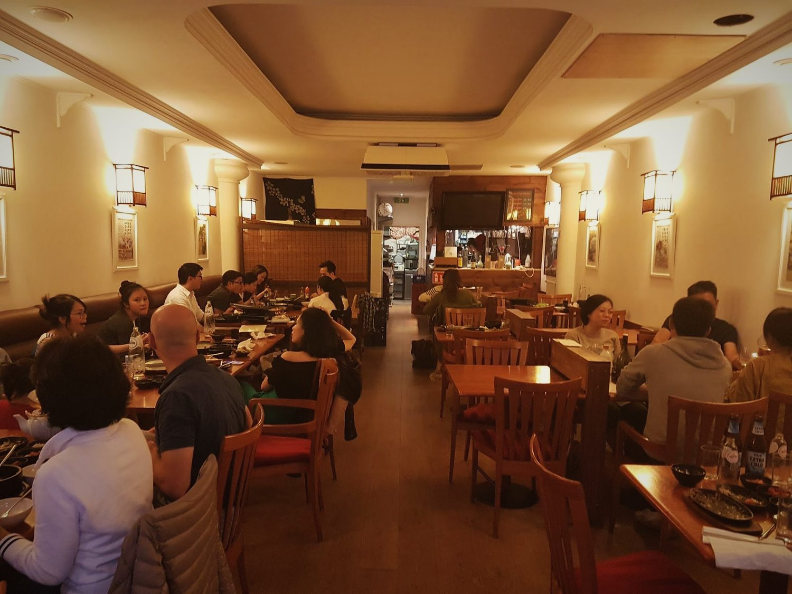
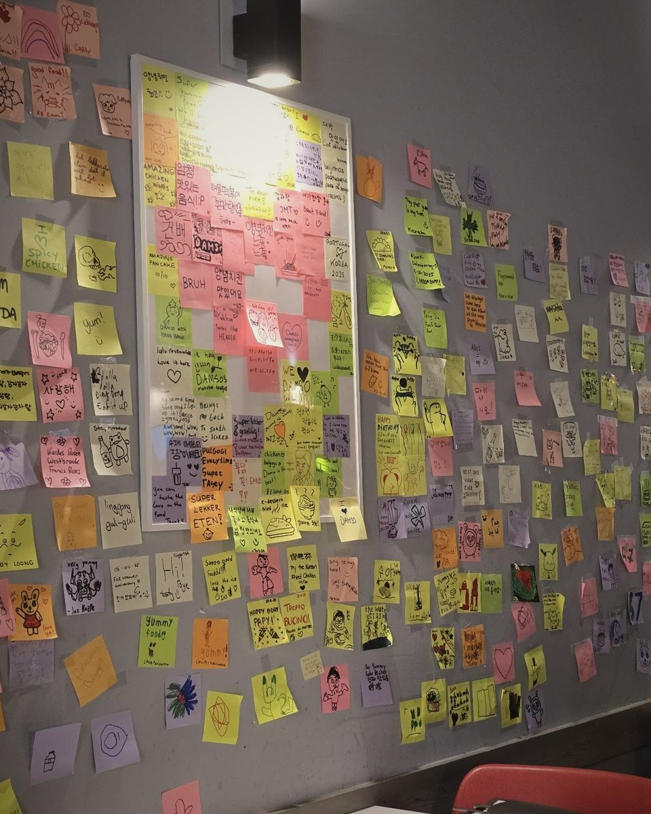
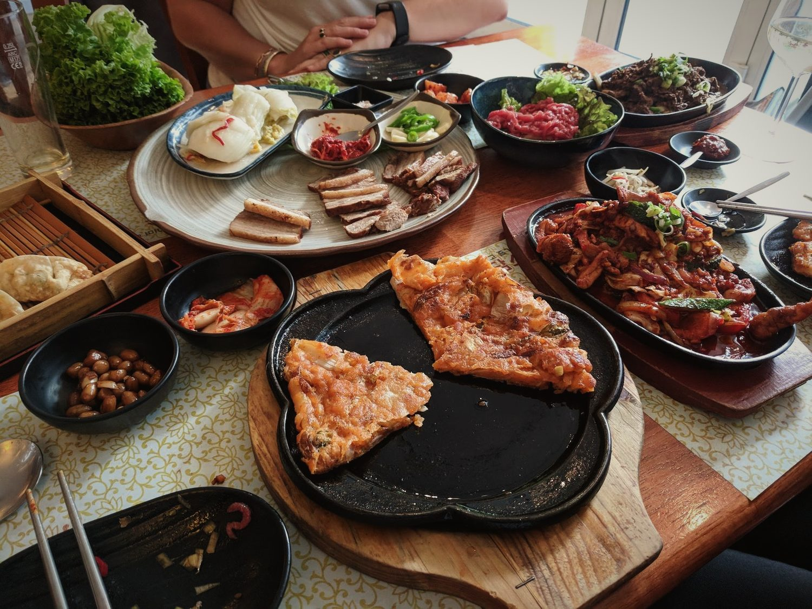

04Since 2008이야기
A good talk,
with laughter.
That is what damso (담소) means in Korean: an easy conversation, full of laughter. It is the whole idea of the room.

Always full of locals (ie Korean guests), which is always a good sign.travelwise24 · Tripadvisor
2008
Damso starts cooking in the old village of Amstelveen, home to one of the largest Korean communities in the Netherlands.


Come in.
There’s a seat.